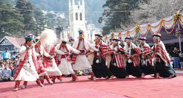

Exploring India's Culture and Heritage
Classical Dance Forms of India
Nati Dance is a traditional folk dance form of the Himachal Pradesh region in India. Known for its vibrant and energetic performance, it is an essential part of the state's cultural heritage and is often performed during local festivals, religious ceremonies, and celebrations.
Nati Dance is a traditional folk dance form of the Himachal Pradesh region in India. Known for its vibrant and energetic performance, it is an essential part of the state's cultural heritage and is often performed during local festivals, religious ceremonies, and celebrations.
Nati has ancient roots, originating in the rural areas of Himachal Pradesh. The term "Nati" is derived from the word "Nat", meaning dance in the local dialect. Historically, it was performed by men and women during the harvest season and festive occasions.
The dance form has evolved over time, absorbing influences from various cultures due to Himachal Pradesh's geographical location and its interactions with other regions. However, the essence of Nati has remained tied to its folk roots.
In the past, it was performed in villages as a social activity where people came together to celebrate and bond with their community. This form of dance often accompanies the traditional music of Himachal Pradesh, using instruments such as the dhol, tabla, flute, and harmonium. The rhythms of the music are fast-paced, complementing the vigorous and lively movements of the dancers.
The dance is characterized by its rhythmic footwork and lively movements, usually performed in a circle or semi-circle formation. It often features:
High-energy jumps and spins.
Complex footwork that includes stamping.
Simple yet graceful arm movements.
Expressive facial gestures to convey emotions or themes.
Men and women participate together in Nati dance, and they wear traditional attire specific to their region. Women typically wear colorful sarees or ghagras, while men wear kurta-pajamas or churidars with headgear.
Tripataka – Used for crowns, fire, or sacred trees.
Ardhapataka – Half-flag; symbolizes leaves, knives, or fallen objects.
Mayura – Represents a peacock, creepers, or applying kajal.
Arala – Curved finger; used for drinking, offering nectar.
Mrigashirsha – Deer-head; denotes beauty, women, or animals.
Hamsasya – Used for delicate actions like holding a flower or tying a thread.
Alapadma – Fully bloomed lotus, shows beauty, offering, or divinity.
Katakamukha – Used for holding garlands, veils, or ornaments.
Mukula – Flower bud; used for eating or presenting something small.
Anjali – Hands joined in prayer; salutation to god, teacher, or audience.
Kapota – Gentle respect; used when speaking politely or showing humility.
Pushpaputa – Used for offering flowers or arati (ritual offering).
Shivalinga – Represents Lord Shiva.
Shankha – The conch; symbolizes sound of the universe.
Chakra – The wheel; Vishnu’s divine weapon.
Karkata – Intertwined fingers; used for opening flowers, or crowds.
Svastika – Crossed wrists; shows conflict, birds flying, or blessings.
Matsya – Represents fish.
Garuda – Eagle; vehicle of Vishnu, used for flying or soaring movements.